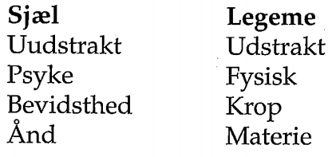

Sjæl / legeme problemet
- Bevidsthed/krop
- Metafysisk problemstilling
Jeget
Dualisme
- Platon: ideer og fænomener
Skepticismen
Rene Descartes
- Gendrive tvivlen for at nå til en sikkerts udganspunkt for tænkningen.
- Man kan ikke skelne mellem drøm og virkelighed.
2 væsensforskellige dele
- Den tænkende substans og den udstrakte substans
- En substans er uafhængig
- 
Problemer
- Kommunikation mellem sjæl og legeme
- Bevarelse af energi
- Kristendom
Why transhumanisme is a myth